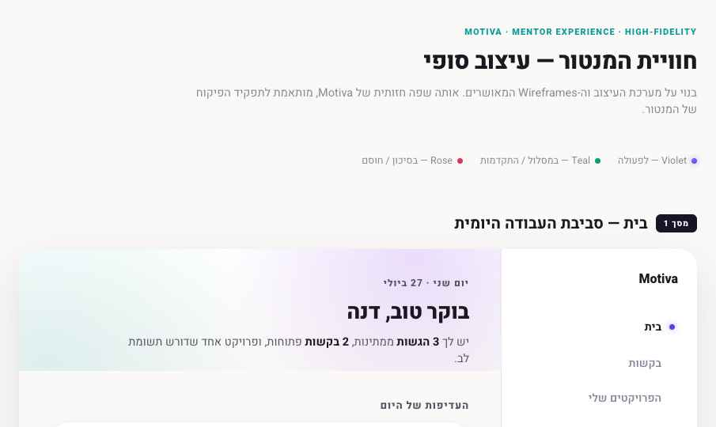

01 · ARCHITECTURE
Product map
The product organized by who uses it. Roles do not share pages today — each has its own file — but they share the same chrome, tokens, and component language.
- Dashboard — daily overview, focus task, resources
- My Tasks — project + team task management
- Calendar & Planning
- Requests — communication workspace
- Knowledge Center — resources & search
- Profile
6 standalone pages, one shared sidebar.
- Home — daily workspace
- My Projects
- Project Workspace — main working surface
- Mentor Resources
- Requests — mentor's review queue
Delivered as one high-fidelity reference file (5 screens in sequence), not yet split into standalone pages.
No finalized lecturer-facing screens exist yet. Not included in this Master — add a role section here once designed, rather than fabricating placeholders now.
Shared across roles: the visual system (tokens, ambient treatment, sidebar shape, notification bell, KPI cards, buttons). Not shared: no screen or flow is literally used by two roles today — Student and Mentor "Requests" are two different pages with the same name and same pattern, not one shared page.
02 · FINAL SCREENS
Final screen inventory
The latest approved version of every screen, captured from its own file — not recreated. Scan left to right within a role to compare chrome, spacing, and density. These are point-in-time captures: click a title to open the live screen, and re-capture here whenever one changes.
Student
{{ s.note }}
Mentor

One reference file, all 5 mentor screens in sequence — open it to scan the full set.
SCREENS INSIDE THIS FILE
- Home — daily workspace
- My Projects
- Project Workspace — main working surface
- Mentor Resources
- Requests — mentor's review queue
Lecturer
No finalized lecturer screens to inventory yet.
03 · COMPONENTS
System-wide components
Recurring patterns extracted directly from the finalized screens above — their canonical appearance and the states each actually uses. Nothing invented.
Sidebar navigation item
Default · Hover · Active (Ambient gradient fill)
Notification bell + badge
Default (no unread) · Unread — badge is always #4F46E5
Page header — two variants
KPI card
Default · Selected/pressed (inset ring in the card's own accent) · Hover thickens the same ring
Row list (the "table" pattern)
Motiva has no literal <table>; every list is .row — space-between, hairline divider, no zebra striping
Content card (Ambient border)
כרטיס תוכן ממוסגר
1px gradient border, violet→teal, white paper inside
Status dots & chips
Violet = active/in-progress · Teal = complete/on-track · Rose = attention/blocked
Buttons
Primary (violet fill) · Secondary (outline) · Text link (underline on hover only)
Filters & search
Pill filter chips (Requests, Tasks) · Search field (Knowledge Center)
Accordion row
Collapsed vs. expanded via chevron rotation; used for milestones (Tasks) and threads (Requests)
Empty state
אין התראות חדשות
כשתתקבל תגובה, משוב או הודעה חדשה, היא תופיע כאן.
One calm sentence + one supporting line — never an illustration
Scrollable container
Thin custom scrollbar (6px, low-contrast) — used inside fixed-height task/team panels
Alert / filtered-state message
Rose-tinted panel for a blocking condition, always paired with one direct action
Progress indicator
Milestone stepper — done (teal, ✓) · current (violet outline, breathing animation) · upcoming (neutral outline)
04 · VISUAL SYSTEM
Visual rules
The existing Motiva tokens, pulled from motiva-student.css — not a new system.
Typography
| Role | Size / weight |
|---|---|
| Page title | 25px / 700 |
| Section title | 15px / 700 |
| Sub label | 13px / 600 |
| Item / row text | 14px / 500 |
| Body | 13.5px / 400 |
| Meta / caption | 12px / 400 |
Typeface: Heebo — now the single canonical UI face across Student, Mentor and the documentation. One face, hierarchy from size + weight rhythm, not display fonts.
Color
Violet
#4F46E5
Teal
#0D9C9A
Rose
#D93864
Ink
#1A1820
Paper
#FAF9F7
Violet = focus/action/primary. Teal = progress/completion. Rose = attention only — reserved, never decorative.
Radius
Card: 18px
Inner element: 14px
Pills/chips: 999px
Shadows & outlines
Cards: hairline #E7E4EC/#F0EEF9 border, no drop shadow at rest. Modals only: soft elevated shadow.
Ambient gradient
Two radial washes (violet top-end, teal bottom-start) over a white→paper linear base. One per page load, at the top only.
Surface hierarchy
Paper (#FAF9F7) → white cards → Ambient-bordered card (highest emphasis)
Content width
Sidebar fixed 248px; main content is fluid full-bleed, 40px side padding and 60px bottom padding — no centered max-width column inside the app shell. Verified against all six student screens: Dashboard, My Tasks, Calendar, Requests and Knowledge Center all follow it; the ambient header and everything below it share the same left/right boundaries, including the KPI row. Profile is the single exception — its settings form is capped at 920px for readability (see audit).
Icons
Thin outline (stroke ~1.6–2px), rounded joins, single weight, 14–16px. No emoji, no filled icons.
Responsive behavior
KPI grid: 4 → 2 → 1 columns at 1060px / 520px. Desktop is the primary target; mobile has not been separately audited.
05 · AUDIT
Consistency audit
Every finalized screen compared against every other. All shared-UI inconsistencies found are now resolved; what remains is marked "By Design" and is intentional. Nothing on this list is open — this version is the frozen source of truth.
Dashboard and Knowledge Center rendered the unread badge in dark ink (#1A1820) while Requests used the approved violet (#4F46E5). Normalized to violet everywhere.
The shared .kpi-grid capped each card at a fixed 208px, so on large desktop the KPI row fell short of the table/list width below it on both Tasks and Requests. Columns now stretch (minmax(0,1fr)) so the KPI row shares the same horizontal boundaries as the content beneath it, using Requests' behavior as the reference.
My Tasks, Calendar and Profile were missing the bell that Dashboard, Requests and Knowledge Center already had. The bell is global navigation, not page-dependent — it is now on all six student pages with identical placement, 32px hit area, icon treatment, violet badge, dropdown, outside-click and Escape behavior.
Mentor Experience and the Visual Manifesto both imported Assistant while every student screen shipped Heebo. Both now use Heebo, so the product and its documentation state one canonical typeface. Mentor layouts were not otherwise touched.
Found while verifying the content-width rule: Knowledge Center was still wrapped in a 1200px rounded, shadowed presentation card while the other app pages are full-bleed. It now uses the same full-height, full-bleed shell. Bottom padding was also aligned to 60px on Requests and Knowledge Center, matching Dashboard, My Tasks and Calendar.
Profile caps its settings form at 920px — intentional, since a full-bleed form at desktop width is unreadable — and is presented as a light/dark comparison so the dark palette exploration stays reviewable next to it. The light shell is the page to implement; the dark shell is a palette reference, not a second screen.
Requests shows 4 KPIs, Tasks shows 4, Mentor's Requests screen shows 4 — the pattern itself (card shape, spacing, states) is identical everywhere it appears; only the metrics differ, which is expected content variation, not an inconsistency.
06 · FOR DEVELOPMENT
Implementation reference
Not code — a map of which visual elements should become one shared, reusable component during development instead of being rebuilt per screen.
Compiled from every finalized screen listed in §2. Update this Master whenever a screen changes — it should always reflect the current approved state, not a point-in-time snapshot.